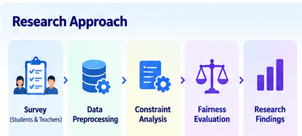
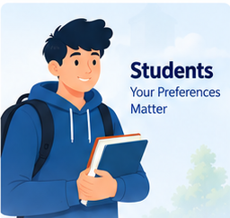
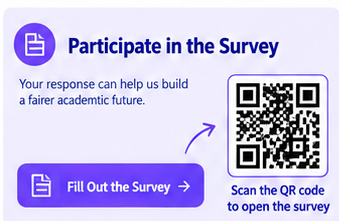

⚖️ Fairness-Aware AI Routine Generator
Exploring Fair, Personalized & Intelligent University Routine Generation
A research study exploring how Artificial Intelligence can support fair and effective university academic scheduling by considering students, teachers, courses, resources, workload, and scheduling constraints.
📋 Participate in Our Research
Scan the QR code or click the form button to complete the survey.
Tap a QR code to enlarge it.
📝 Form 1
Student & Teacher Survey
For collecting student and teacher preferences,
requirements, workload, constraints, and scheduling needs.
📝 Form 2
Time-Slot Rating Survey
For rating different university scheduling time-slot
scenarios using a 1–5 rating scale.
🧠 About the Research
Fairness-Aware AI Routine Generator is a research project focused on exploring how Artificial Intelligence can be used to support university academic routine generation.
University scheduling is more than assigning courses to available time slots. A practical routine must consider the different and sometimes conflicting needs of students, teachers, courses, laboratories, rooms, resources, workload, and time.
The research therefore asks:
How can AI generate university routines that are not only feasible and personalized, but also fair?
🎯 Research Objectives
- Investigate student preferences for academic routines.
- Investigate teacher requirements and teaching preferences.
- Identify academic, laboratory, resource, and scheduling constraints.
- Explore fairness strategies for AI-based scheduling decisions.
- Study how AI can balance satisfaction, efficiency, and fairness.
- Establish a foundation for future AI-powered routine-generation software.
🔬 Research Approach

The current phase focuses on research and data collection.
Survey → Data Analysis → Constraint Identification → Fairness Investigation → Research Findings
The findings can then guide the design of the future software system.
👥 Who Can Participate?

🎓 Students
The research investigates student preferences related to class timing, workload, breaks, practical labs, campus transitions, assessments, and routine structure.
👨🏫 Teachers
The research investigates teaching workload, preferred teaching slots, research time, consultation periods, breaks, course scheduling, and resource requirements.
📚 Key Research Areas
- 🎓 Student scheduling
- 👨🏫 Faculty workload
- 📚 Course and laboratory scheduling
- 🏫 Resource constraints
- ⚖️ Fairness in AI decisions
- 🔄 Multi-semester fairness
⚖️ Fairness in AI Scheduling
A central issue in academic scheduling is what happens when everyone's preferred option cannot be satisfied.
For example, an AI system may need to choose between:
- Maximizing the number of satisfied people
- Distributing inconvenient slots fairly
- Considering workload differences
- Considering previous scheduling burdens
- Prioritizing important resource constraints
The research explores how students and teachers believe such decisions should be made.
🧪 Course, Laboratory & Resource Constraints
Academic scheduling involves multiple real-world constraints.
- Course and section availability
- Theory and practical classes
- Laboratory duration and workload
- Room availability
- Laboratory availability
- Faculty availability
- Assessment and examination conflicts
- Time-slot limitations
A future AI system can use these constraints to generate feasible candidate routines before applying fairness-based evaluation.
📊 Expected Research Impact
- More balanced academic routines
- Better understanding of scheduling preferences
- More transparent AI scheduling decisions
- Fairer distribution of scheduling burdens
- Better resource-aware scheduling
- Future AI-based routine generation
🔄 Multi-Semester Fairness
Fairness can extend beyond a single semester.
A future scheduling system could consider historical scheduling burden so that the same group does not repeatedly receive inconvenient schedules.
This creates the possibility of long-term fairness rather than evaluating every routine independently.
💻 Future Software Development
The current work is research-focused.
Based on the research findings, we plan to develop a future software system capable of generating university routines automatically.
Possible Future Features
- 🎓 Student preference management
- 👨🏫 Teacher preference management
- 📚 Course management
- 🧪 Laboratory scheduling
- 🏫 Room and resource management
- ⏰ Time-slot management
- ⚖️ Fairness-aware conflict resolution
- 📊 Routine quality and fairness analysis
- 🔄 Historical fairness tracking
- 🗓️ Automatic routine generation
- 📤 Routine export and sharing
The software is planned future work and is not presented as a completed outcome of the current research.
📝 Take Part in the Survey
Your response can help us understand how students and teachers believe an AI-based university routine generator should make scheduling decisions.

🚀 Future Research & Development
- ☐ Collect survey responses
- ☐ Clean and organize research data
- ☐ Analyze student preferences
- ☐ Analyze teacher preferences
- ☐ Identify major scheduling constraints
- ☐ Define appropriate fairness criteria
- ☐ Develop fairness metrics
- ☐ Convert preferences into structured parameters
- ☐ Develop a scheduling/optimization model
- ☐ Generate candidate routines
- ☐ Evaluate routine fairness
- ☐ Develop AI-based routine-generation software
- ☐ Build a web-based interface
- ☐ Test with real-world university scheduling data
- ☐ Compare against conventional scheduling approaches
🔗 Project Links
| Resource | Link |
|---|---|
| 📦 GitHub Repository | Fairness-Aware-AI-Routine |
| 📝 Research Form 1 | Google Form 1 |
| 📝 Research Form 2 | Google Form 2 |